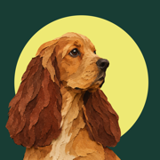
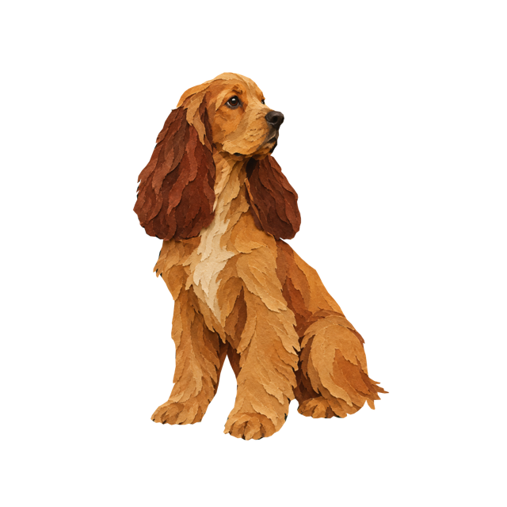

dear dog
Understand the little signals.
Dear Dog gives you a careful read of your dog's body language from one photo or a five-second clip, plus a calm next step.
Download on the App StoreFor iPhone with iOS 17 or later
Monthly or annual subscription
How it works
- Point your camera. Hold still and tap for a photo, or hold for a five-second clip.
- See what we noticed. Ears, eyes, tail and posture in plain words, including what stayed unclear.
- Ask about it. Ask a follow-up question about that look.
Yours stays yours.
- Nothing is sent until you tap Use this. Then the photo, or a few frames of the clip, goes through Dear Dog's service to Google Gemini for the read.
- Looks are saved on your iPhone only, and you can delete them any time.
- No account, no ads, no tracking.
A tentative read of visible body language, not a diagnosis or a translation of your dog's thoughts. For illness or pain, contact a veterinarian.